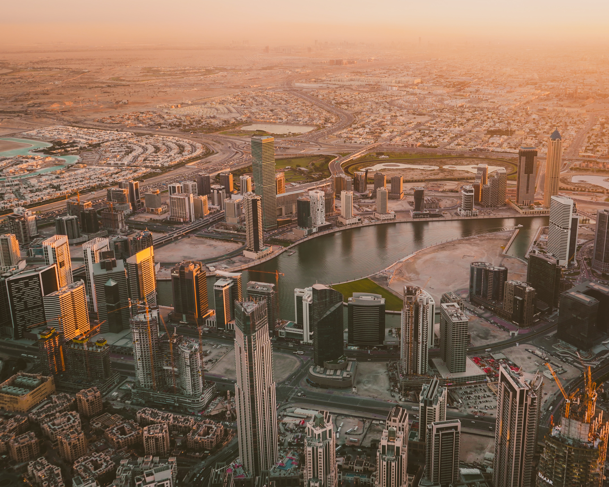

|
1. Toronto (Canadá)Toronto se encuentra en la orilla norte del Lago Ontario, y se trata de la ciudad más grande de Canadá, capital de la provincia de Ontario. Originalmente conocida como “York” cuando fue fundada por los británicos en el siglo 18, en la actualidad 6 millones de personas residen en el área metropolitana. ¿Qué debes visitar en Toronto? Bueno, la ciudad más grande de Canadá es perfecta para ser explorada a pie, aunque posee excelentes redes de autobús, tranvía y metro (a veces el tráfico puede ser pesado). Sus numerosos distritos atienden a determinados sectores, con origen étnico o nacionalidad diferentes. Sin embargo, no existe ningún tipo de tensión entre ellos y la metrópolis goza de buenos índices de criminalidad en comparación con otras grandes ciudades. |

|
2. Londres (Reino Unido)Londres es uno de los grandes destinos turísticos del mundo. Cuando llegas, te das cuenta rápidamente del porqué. Londres es una ciudad diversa, colorista, cosmopolita, deslumbrante. Una ciudad que cuenta con una historia de más de dos mil años, pero en la que se funde lo moderno y futurista con una gran profusión de artes y espectáculos. ¿Qué debes visitar en Londres? Serían innumerables los lugares que tendríamos por visitar en Londres. Si tuviéramos que hacer una selección no podrían faltar el British Museum, el museo más antiguo del mundo, la National Gallery, las vistas de Londres desde el London Eye, el Museo de Historia Natural, el Palacio de Buckingham, la Abadía de Westminster, el Big Ben y el Edificio del Parlamento, la Torre de Londres, situada junto al famoso puente, la Catedral de San Pablo o Trafalgar Square. |
|  |
3. Dubai (Emiratos Arabes Unidos)Dubai es la ciudad más grande y famosa de los Emiratos Árabes Unidos, seguida por Abu Dhabi, la capital de Emiratos. Se encuentra ubicado en el Golfo Pérsico, entre Sharjah y Abu Dhabi. Conocida también como la ciudad de Dubai, está dividida por Dubai Creek, una brecha de agua salada que divide la ciudad. Al norte de la brecha, la zona alberga gran cantidad de especias, pescado y oro en zocos. El lado sur, en cambio, es una zona con una fuerte influencia india. ¿Qué debes visitar en Dubai? Dubai es una ciudad que genera un gran número de visitas cada mes, hay muchos puntos de interés que merece la pena visitar algunos son: Dubai Creek, el Museo de Dubai, La Mezquita Jumeirah, La Fuente de Dubai, El Burj Khalifa y el hotel Burj Al Arab. |

|
4. Buenos Aires (Argentina)Si estás por viajar a la capital de Argentina probablemente te estés preguntando: ¿qué hacer en Buenos Aires? La verdad es que esta ciudad llena de vida tiene un sinfín de propuestas ideales para disfrutar de deliciosas comidas, vida nocturna, arquitectura imponente y mucha historia. Los lugares turísticos de Buenos Aires fácilmente podrían ser cientos. ¿Qué debes visitar en Buenos Aires? Bosques de Palermo y Palermo Soho, San Telmo y Recoleta, El Obelisco, La Boca y Caminito, Puerto Madero, Delta del Tigre y el Teatro Colón. |

|
5. Santiago (Chile)La auténtica ciudad de Santiago, también conocida por ser la capital chilena, se encuentra ubicada en el Valle del Maipo, cercano a la cordillera de los Andes y de la Costa. En tal sentido, se trata de una gran ciudad donde se centra la mayor actividad económica y política del país, siendo además un lugar indispensable para la conservación cultural. Por lo tanto, es posible encontrar numerosos atractivos que hacen de Santiago un lugar imperdible, ya sea que busques barrios bohemios, centros históricos o parques naturales, la capital chilena resulta ser ideal para disfrutar de una excelente estadía. ¿Qué debes visitar en Santiago? El Cerro Santa Lucía, El Barrio de Bellavista, El Barrio Lastarria, La Parva, El Parque O’Higgins, La Plaza de Armas y El Mercado Central. |